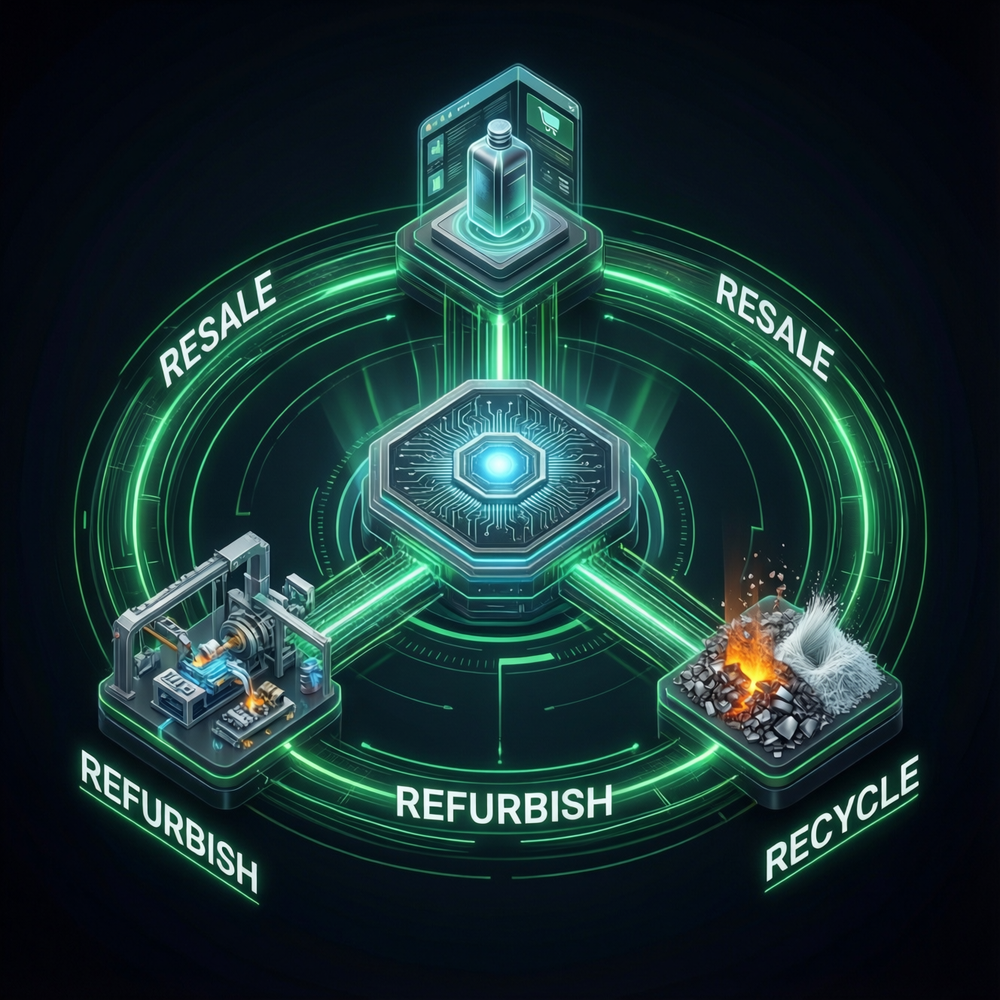
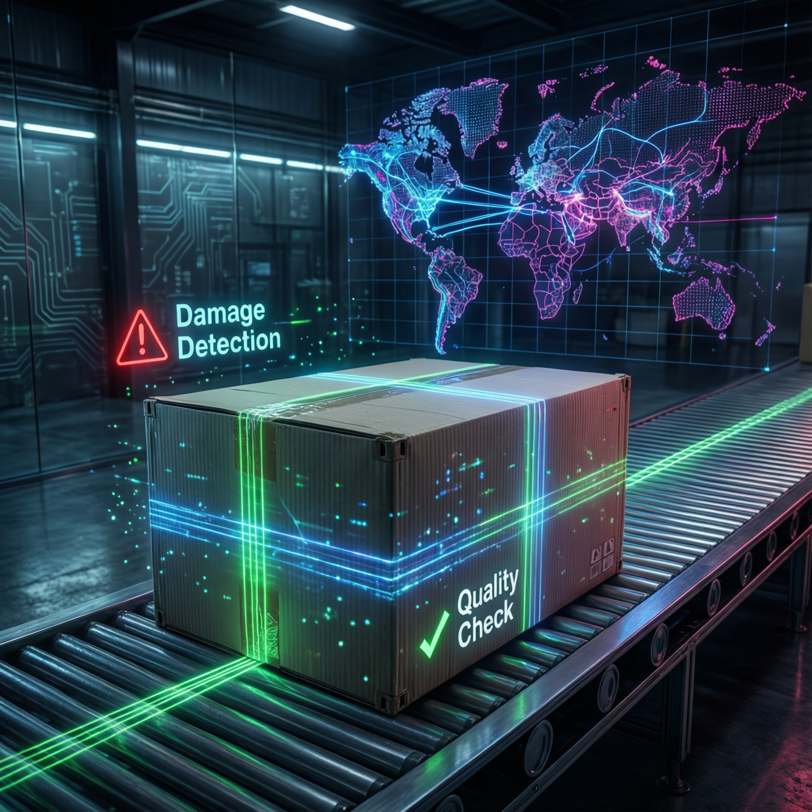

ทบทวนวรรณกรรมและงานวิจัย
การวิเคราะห์ AI ในกระบวนการ Reverse Logistics (2561-2569)
แนวคิดพื้นฐาน
CLOSED-LOOP SUPPLY CHAIN

การบูรณาการ Forward และ Reverse Logistics เข้าด้วยกัน เพื่อหมุนเวียนทรัพยากรอย่างยั่งยืน โดยใช้ AI ช่วยตัดสินใจสถานะสินค้า (Dispositioning) ว่าควร Resale, Refurbish หรือ Recycle
COMPUTER VISION & AI

การใช้ Machine Learning คํานวณเส้นทางแบบพลวัต (Dynamic Routing) และใช้ Computer Vision ตรวจสอบความเสียหายสินค้าอัตโนมัติ เพื่อมาตรฐานที่สูงกว่าแรงงานคน
งานวิจัยที่เกี่ยวข้อง
| ผู้วิจัย / องค์กร | จุดเด่น / เทคโนโลยี | ผลลัพธ์ / จุดอ่อน |
|---|---|---|
| Brown et al. (2024) | Dynamic Route Optimization | + ลดวิ่งรถเปล่า 15-25% - ทดสอบเฉพาะพื้นที่ดิจิทัลหนาแน่น |
| Lee & Park (2024) | Deep Learning (Electronics) | + แม่นยำ 97% แยกประเภทแผลได้ - ต้องใช้ Dataset ขนาดมหาศาล |
| Amazon (2023) | AI Photo Inspection | + คืนเงินทันที ลดค่าขนส่งขยะ - เสี่ยงลูกค้าส่งภาพไม่ตรงปก |
ช่องว่างของงานวิจัย (Research Gap)
งานวิจัยส่วนใหญ่เน้นบริษัทข้ามชาติและโครงสร้างพื้นฐานในประเทศพัฒนาแล้ว REVERSECORE จึงมุ่งเน้นการศึกษาในบริบทของ ประเทศไทยและกลุ่ม SMEs ที่มีข้อจำกัดด้านงบประมาณและฐานข้อมูล เพื่อสร้างแนวทางที่นำไปใช้ได้จริงในตลาดไทย